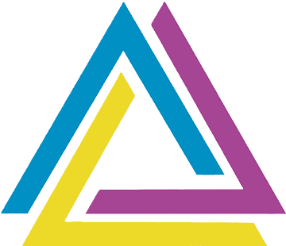
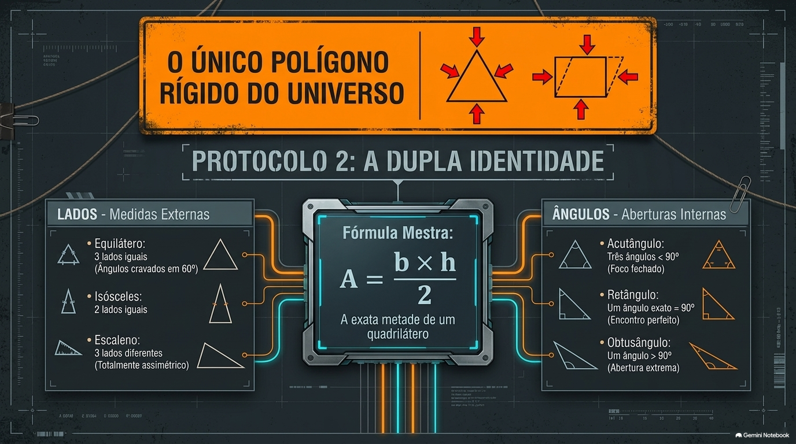

Definição

| Um triângulo é um polígono de três lados, sendo a figura geométrica plana mais simples e fundamental da geometria. Ele é formado pela união de três segmentos de reta que se encontram em três pontos distintos, chamados de vértices. |
Propriedades Fundamentais:
- Elementos básicos: Possui exatamente 3 lados, 3 vértices e 3 ângulos internos.
- Soma dos ângulos: A soma dos seus três ângulos internos é sempre igual a 180°.
- Rigidez geométrica: É a única figura poligonal que não se deforma. Por conta dessa estabilidade, ele é amplamente utilizado em estruturas de engenharia e arquitetura, como em pontes, torres e telhados.

Tipos de triângulos

Delimitadores
A seguir temos alguns Slides com explicações e exercícios sobre Área de triângulos.